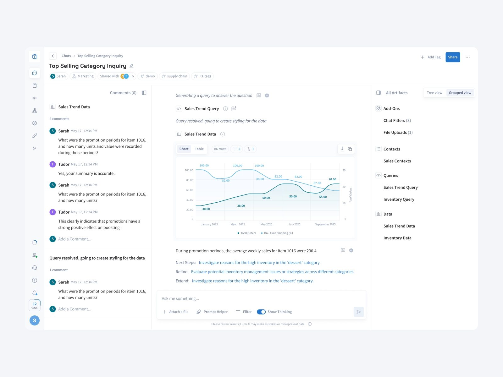

Lumi AI
An AI analytics platform that helps retail and supply chain teams explore business data, investigate issues, and turn answers into shared workspaces.

Overview
Lumi AI helps business teams answer operational questions using natural language. It connects business data with conversational analysis and interactive dashboards, allowing users to investigate inventory, sales, and supply chain performance without writing SQL.
The project focused on evolving this experience into a connected workspace: a place to ask questions, inspect how answers were generated, and organize useful insights for ongoing monitoring.
My role
As a Senior Product Designer, I worked closely with the founder, product manager, and engineers across the core product. My scope covered conversational analytics, Boards, Knowledge Base, and the shared design system—from interaction flows and prototypes to detailed UI and implementation reviews.
- Designed core workflows across Chat, Boards 2.0, and Knowledge Base.
- Built reusable components and design tokens to support a consistent interface.
- Created interactive prototypes, prepared developer handoff, and reviewed implementation quality.
Challenge
Making business data accessible through chat was only part of the challenge. Users also needed to understand where answers came from, inspect the analysis behind them, and keep useful results within reach. The design had to connect conversations, data sources, charts, and dashboards while keeping complex analytical workflows clear and manageable.


Approach
I structured the experience around three connected activities: asking questions, exploring results, and monitoring what matters. In Chat, I designed ways to inspect analysis steps and work with generated tables and charts. Boards brought saved insights into customizable workspaces, while Knowledge Base made data sources and their context easier to manage.
Working closely with product and engineering, I refined these flows through design reviews, interactive prototypes, and implementation feedback. A shared system of components and tokens supported consistency as the product evolved.
Outcome
The work brought Chat, Boards, and Knowledge Base into a more cohesive product experience. The resulting designs supported transparent analysis, persistent artifacts, customizable dashboards, and clearer data management—giving users ways to continue working with an answer beyond the initial conversation.
The design system also provided a reusable foundation for new features and a consistent reference for engineering handoff.